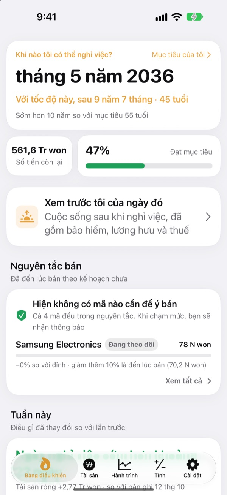
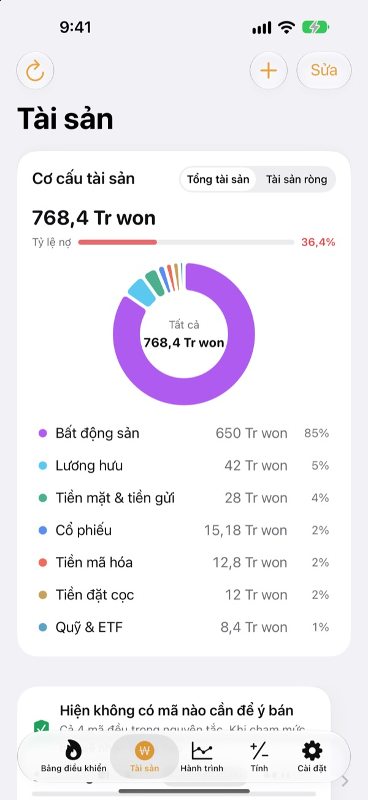
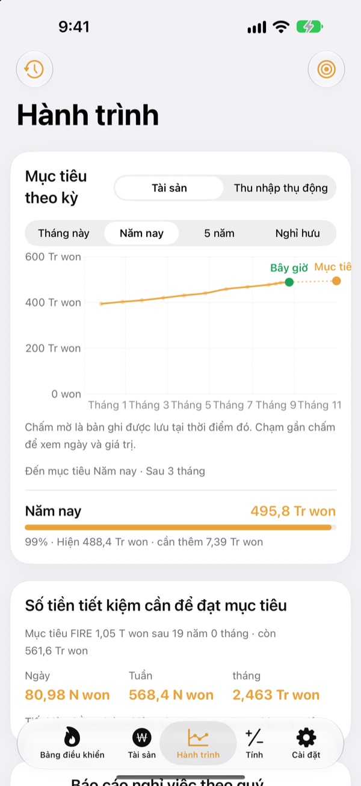
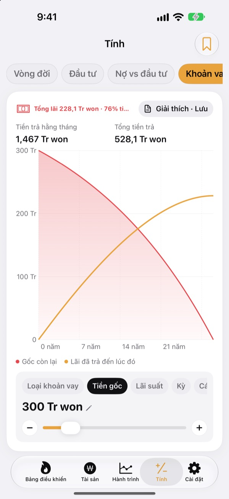

Khi nào bạn nghỉ việc được?
Xem bằng con số.
Nhập số tiền bạn tiêu và số tiền đã tích lũy, bạn sẽ thấy tháng mình có thể nghỉ. Mỗi lần tài sản thay đổi, bạn biết ngay ngày đó đến gần hơn hay lùi xa hơn.
Không cần tài khoản. Dữ liệu nằm trên thiết bị của bạn.

Tìm ngày nghỉ việc của bạn
Kéo thanh trượt. Đây chính là phép tính ứng dụng chạy ở màn hình đầu tiên.
Vẫn tự nhẩm trong đầu "đã nghỉ được chưa"?
Khi tiền ngân hàng, tài khoản chứng khoán, quỹ hưu trí và tiền đặt cọc thuê nhà nằm mỗi nơi một chỗ, đến tổng tài sản cũng mơ hồ, nên ngày nghỉ việc chỉ là phỏng đoán. Toesagak gom tất cả về một màn hình và liên tục tính lại tháng bạn có thể nghỉ từ con số tổng đó.
Mọi tài sản trên một màn hình
Bất động sản, cổ phiếu, quỹ và ETF, hưu trí, tiền mặt và tiền gửi, tiền đặt cọc, tiền mã hóa và khoản vay, nhóm theo loại, kèm tổng tài sản, tài sản ròng và tỷ lệ nợ.
Giá cổ phiếu và tiền mã hóa được lấy về để giá trị luôn mới, và chỉ một ảnh chụp màn hình ứng dụng chứng khoán là đưa vào toàn bộ mã và giá trị.

Mỗi ngày cần bao nhiêu để tới đích
Xem mục tiêu tháng này, năm nay, năm năm và nghỉ hưu cùng các bản ghi trước đây trên một biểu đồ. Ứng dụng còn cho biết cần để dành bao nhiêu mỗi ngày, tuần hay tháng để đi đúng hướng.
Khi tài sản thay đổi, bản ghi của tuần đó tự được lưu, nên lịch sử cứ thế dày lên.

Tính trước khi quyết định lớn
Máy tính đường tài sản trọn đời, đầu tư, trả nợ hay đầu tư, khoản vay, tiền gửi và tiết kiệm, sức mua của lương, và quy đổi tiền thành giờ làm. Kéo một giá trị là biểu đồ vẽ lại, đường cũ vẫn còn dạng nét đứt để so sánh.
Đặt tên và lưu các thiết lập bạn hay dùng.

Ba bước để bắt đầu
- 1
Nhập chi tiêu và tuổi
Số ước chừng là đủ. Ngày nghỉ việc hiện ra ngay.
- 2
Thêm tài sản
Chia càng chi tiết, ngày càng chính xác.
- 3
Thỉnh thoảng ghé xem
Bản ghi hằng tuần tự tích lại, và ứng dụng có thể nhắc bạn vào ngày 1 mỗi tháng.
Ứng dụng tính như thế nào
- Mục tiêu
- Chi tiêu một năm sau khi nghỉ ÷ tỷ lệ rút an toàn (ở mức 4% là 25 năm chi tiêu)
- Ngày nghỉ việc
- Tháng mà tài sản ròng cộng số tiền để dành mỗi tháng, tăng theo lợi suất kỳ vọng, chạm mục tiêu
- Tổng tài sản
- Mọi thứ bạn sở hữu cộng lại
- Tài sản ròng
- Tổng tài sản trừ các khoản nợ như khoản vay
- Tiến độ
- Tài sản ròng ÷ mục tiêu. Cũng có thể theo dõi bằng thu nhập thụ động
- Những gì bạn chỉnh được
- Chi tiêu hằng tháng, tỷ lệ rút từ 2 đến 6%, lợi suất kỳ vọng từ 0 đến 12%, độ tuổi bạn muốn nghỉ
Mọi kết quả là phép tính tham khảo dựa trên dữ liệu bạn nhập, không phải lời khuyên đầu tư.
Câu hỏi
Dữ liệu của tôi được lưu ở đâu?
Chỉ trên thiết bị của bạn. Không cần đăng ký và không có gì được gửi cho nhà phát triển. Bật đồng bộ iCloud trong Cài đặt để xem cùng dữ liệu trên iPhone và iPad qua tài khoản iCloud của chính bạn.
Giá không cập nhật.
Cổ phiếu Mỹ và Hàn Quốc, tiền mã hóa và tỷ giá hoạt động mà không cần thiết lập gì. Hãy kiểm tra kết nối mạng và mã chứng khoán đã đúng chưa. Giá căn hộ dùng dữ liệu bất động sản công khai của Hàn Quốc và cần nhập khóa dịch vụ trong Cài đặt.
Tổng tài sản và tài sản ròng khác nhau thế nào?
Tổng tài sản là mọi thứ bạn sở hữu cộng lại. Tài sản ròng là con số đó trừ đi các khoản nợ như khoản vay. Ngày nghỉ việc được tính theo tài sản ròng.
Làm sao chuyển dữ liệu sang thiết bị mới?
Dùng Xuất trong Cài đặt để tạo tệp sao lưu, lưu vào ứng dụng Tệp, iCloud Drive hoặc email, rồi khôi phục trên thiết bị mới. Tệp sao lưu không bao giờ chứa khóa API. Ứng dụng cũng tự giữ 20 bản sao lưu gần nhất trên thiết bị.
Cảnh báo bán hoạt động thế nào?
Với mỗi mã, đặt mức giảm tối đa từ đỉnh hoặc một giá mục tiêu. Khi giá vượt qua ngưỡng đó, bạn sẽ nhận được thông báo. Lúc giá tăng thì ứng dụng không làm phiền. Giá được kiểm tra khi bạn mở ứng dụng và khi iOS cho phép chạy nền (thường vài giờ một lần), nên đây không phải theo dõi thời gian thực.
Tôi có thể giấu các con số không?
Bật Khóa ứng dụng trong Cài đặt để mở bằng Face ID hoặc mật mã. Khi đã khóa, lời nhắc hằng tháng cũng không hiện con số nào.
Tôi có thể xem thử trước không?
Bật Dữ liệu mẫu trong Cài đặt để xem mọi màn hình với tài sản của một nhân vật giả định. Tắt đi là dữ liệu của bạn trở lại ngay. Không dùng được Dữ liệu mẫu khi đang bật đồng bộ iCloud.
Làm sao xóa toàn bộ dữ liệu?
Xóa ứng dụng sẽ xóa mọi bản ghi lưu trên thiết bị. Nếu muốn giữ một bản, hãy xuất tệp sao lưu trong Cài đặt trước.
Tôi có thể đầu tư dựa vào những con số này không?
Kết quả của Toesagak là phép tính tham khảo dựa trên dữ liệu bạn nhập và một mức lợi suất giả định. Đó không phải lời khuyên đầu tư, và kết quả thực tế tùy thuộc vào thị trường và hoàn cảnh của bạn.
Báo lỗi, góp ý hay có câu hỏi? Hãy viết cho leeo@kakao.com.